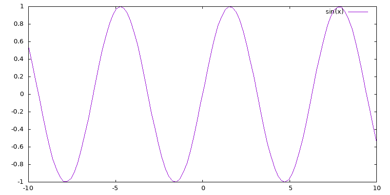

w2-w5 <<
Previous Next >> replit_github
w6-w7
w5 之前的教學影片:
說明安裝 Apps, 如何設定網路, 查驗是否正確連網
說明如何利用近端可攜系統執行 C 程式, 如何利用 ChatGPT 進行對話
說明如何利用 Replit 協助編輯網頁內容
說明如何 connect Replit to Github, 如何建立個人網站並利用 Replit 啟動編輯網站
有關電腦輔助設計室網路設定說明
處理 .replit 與 replit.nix 中的舊 Python 設定問題
說明如何為 site-個人github帳號 倉儲設定 Github Pages (已經放棄使用 site- 倉儲, 改用學員帳號下的 cp2023 倉儲)
w5 1b cp2023 與 Replit C 程式執行環境說明影片.mp4
說明如何進行倉儲的 pull request
評分網站與倉儲:
cp2023 1a 學員網站與倉儲連結
cp2023 1b 學員網站與倉儲連結
學員展示用 IPv6 位址, 請利用 setup 進行網路設定:
1a 學員展示用 IPv6 位址: 2001:288:6004:17:2023:cba::班級名單序號 (原先使用 cpa, 因為 p 並非 16 位元的合法字元, 因此將 p 向上翻轉成為 b, 2023 之後接 cba)
2b 學員展示用 IPv6 位址: 2001:288:6004:17:2023:cbb::班級名單序號
建立線上考試題目
從 gnuplot 到 gd 利用 C 程式繪圖設定說明影片
各學員評分倉儲與網站的內容維護 (說明影片, 抱歉, 影片大約在 8:30 之後沒有聲音, 1b 相同進度的說明影片):
SMap: site map 網站所有頁面
EditA: edit all pages, 使用時機為(1)解決多人共用網站時的衝突, 或(2)刪除特定頁面
Edit: edit one page, 先選頁面, 再選 Edit 然後才能進入編輯模式
Config: 編輯網站標題, 若要編輯 site title, 必須更改 init.py 中的 site_title 字串內容
Search: 頁面資料 html 原始碼內容搜尋
IUpload: image upload, 影像檔案上傳, 資料會放入 images 目錄中
IList: image file list, 列出存在 images 目錄下的影像檔案
FUpload: file upload, 一般檔案上傳功能, 資料會放入 downloads 目錄中
FList: file list, 列出位於 downloads 目錄下的檔案
Logout: 登出
Convert: 將 config/content.htm 經過分頁程式處理後, 轉為 content 目錄下的超文件
C 程式練習一:
請從 https://www.w3resource.com/c-programming-exercises/ 網頁中自選 10 個練習範例, 分別在 Replit, Windows 與 Linux (or macOS) 中執行後, 取下執行畫面放入個人的 Github Pages 網頁 (即帳號.github.io 網站), 以 ANSIC 作為頁面標題並詳細說明每一行的程式語法.
C 程式練習二:
請從 jsliu_c_programming.pdf (需要下載密碼)與 Introduction to C (經由校園網路或 VPN 下載)電子書中各擷取 10 個 C 程式範例, 分別:
1. 在可攜程式環境中以 SciTE + Tiny C Compiler 編譯系統, 使用 Tools - Go 類編譯方式執行.
2. 在可攜程式環境中以 SciTE + Tiny C Compiler 編譯系統, 使用 Tools - Compile 編譯連結後取得 a.out, 然後在命令列中以 a.out 執行.
3. 在 Replit 全球資訊網 IDE 環境中的 Shell 頁面, 以 cc ex1.c 產生可執行檔案 a.out, 並以 ./a.out 執行, 或者以 cc ex1.c -o ex1 指定編譯連結後的可執行檔案名稱為 ex1 後, 以 ./ex1 執行.
最後將所選擇的 C 程式範例執行過程與相關說明內容, 整理在個人 github 帳號下的 cp2023 倉儲網頁中的 c_ex 頁面中.
gnuplot_ex1.c 原始碼如下:
// 包含標準輸出入程式庫的標頭文件
// https://blog.csdn.net/weixin_38468077/article/details/101069365
// http://www.gnuplot.info/demo/
// https://github.com/sysprog21/rv32emu
// https://github.com/sysprog21/semu
// https://docs.google.com/presentation/d/14N0cWG2SnBSqhc2cLF0_2VerB9FF8JN3
// https://cs61c.org/fa23/
// https://greenteapress.com/wp/think-python-2e/
// https://github.com/ecalvadi/c99-examples
// https://github.com/gouravthakur39/beginners-C-program-examples
// https://github.com/ergenekonyigit/Numerical-Analysis-Examples
// https://www.che.ncku.edu.tw/facultyweb/changct/html/teaching/CPPandMATLAB/Past/pdf%20Files/Chap02-Ling.pdf
// https://gteceducation.com.sg/Brochures/PROGRAMMING/C%20PROGRAMMING%20FULL.pdf
// https://jsommers.github.io/cbook/cbook.pdf
// https://jsommers.github.io/cbook/index.html
// http://student.itee.uq.edu.au/courses/csse2310/CProgrammingNotes.pdf
// http://cslibrary.stanford.edu/101/EssentialC.pdf
// https://publications.gbdirect.co.uk/c_book/
// https://www.fossil-scm.org/fossil-book/doc/2ndEdition/fossilbook.pdf
// ***** execute on replit
// cd downloads
// cc gnuplot_ex1.c -o gnuplot_ex1
// ./gnuplot_ex1
#include <stdio.h>
// 主函式
int main() {
// Start a Gnuplot process using popen
FILE *gnuplotPipe = popen("gnuplot -persistent", "w");
if (!gnuplotPipe) {
fprintf(stderr, "Failed to start Gnuplot.\n");
return 1;
}
// Use Gnuplot plotting commands, specify font and output as PNG
fprintf(gnuplotPipe, "set terminal png font 'default,10' size 800,400\n");
fprintf(gnuplotPipe, "set output './../images/gnuplot_ex1.png'\n");
fprintf(gnuplotPipe, "plot sin(x)");
// Close popen
pclose(gnuplotPipe);
return 0;
}
執行結果位於 images:

gnuplot 5.0 參考手冊.pdf
Quick guide to gnuplot.pdf
從今天起忘記 MicroSoft Excel (!)
前述 Replit 平台環境中, 已經加入 Gnuplot 繪圖程式庫, 若循相同設定, 在 replit.nix 中加入 gd 繪圖程式庫以及 ncurses 終端機圖形介面程式庫, 則可結合 C/C++ 進行各式靜態與動態繪圖練習:
replit.nix
{ pkgs }: {
deps = [
pkgs.gnuplot
pkgs.ncurses.dev
pkgs.gd
];
}
納入 ncurses 後的 C 程式編譯連結指令為: cc ncurses_ex1.c -lncurses -lm
其中 -lncurses 會在連結階段導入所需的 ncurses 程式庫, 而 -lm 則導入 math.h 時連結數學程式庫之用.
至於納入 gd 繪圖程式庫後的編譯連結指令為: cc gd_ex1.c -lgd -lm
其中 -lgd 會在連結階段導入所需的 gd 程式庫, 而 -lm 則導入數學程式庫.
gd 程式庫繪圖練習:
gd_roc_flag.c
gd_usa_flag.c
目前所得到的繪圖結果如下:
 與
與
請完成上列兩國國旗的繪製.
ROC 國旗定義
青天白日格式定義
USA 國旗定義
gd 2.0.31 (mit.edu)
ROC 國旗繪製, 可以先從目前已知的線架構點座標:
設法先對單一菱形著色:
之後旋轉六次, 再疊上藍色光環:

進階練習:
C 與 gnuplot 及 gd 繪圖程式庫的結合, 除了在 Replit 平台上執行外, 如何在 Windows 可攜系統中以 Tiny C Compiler 完成相同的運算與繪圖流程?
w7
如何建立各組協同網站說明影片
如何將協同網站設定協同者後, import 進入 Replit 說明影片
進行九人一排分組, 期中成績預計送出個人期望成績.
第七週練習
已知利用下列的 ANSI C 程式, 結合 gd 繪圖程式庫可以畫出 ROC Flag, 請循相同方法, 畫出 PROC, United Kingdom, Japan 與 Korea Flags.
ROC Flag in gd: roc_flag_in_gd.c
// https://en.wikipedia.org/wiki/Flag_of_the_Republic_of_China
// 內政部國旗參考資料: https://www.moi.gov.tw/cp.aspx?n=10621
// cc roc_flag_in_gd.c -lgd -lm to link with gd and math library
// https://www.rapidtables.com/web/color/RGB_Color.html
// 幾何形狀著色與繪圖練習
// 以下 gd 繪圖程式嘗試畫出 ROC 國旗, 請根據下列程式內容完成後續的國旗繪圖
#include <stdio.h>
#include <gd.h>
#include <math.h>
void draw_roc_flag(gdImagePtr img);
void draw_white_sun(gdImagePtr img, int x, int y, int size, int color);
int main() {
// width 3: height 2
int width = 1200;
// 國旗長寬比為 3:2
int height = (int)(width*2.0 / 3.0);
gdImagePtr img = gdImageCreateTrueColor(width, height);
gdImageAlphaBlending(img, 0);
draw_roc_flag(img);
FILE *outputFile = fopen("./../images/roc_flag_in_gd.png", "wb");
if (outputFile == NULL) {
fprintf(stderr, "Error opening the output file.\n");
return 1;
}
gdImagePngEx(img, outputFile, 9);
fclose(outputFile);
gdImageDestroy(img);
return 0;
}
void draw_roc_flag(gdImagePtr img) {
int width = gdImageSX(img);
int height = gdImageSY(img);
int red, white, blue;
// 白日位於青天面積正中央, 因此中心點座標為長寬各 1/4 處
int center_x = (int)(width/4);
int center_y = (int)(height/4);
// gdImageFilledEllipse 需以長寬方向的 diameter 作圖
// 由於中央白日圓形的半徑為青天寬度的 1/8
// 因此中央白日圓形的直徑為青天寬度的 1/4, 也就是國旗寬度的 1/8
// 而且白日十二道光芒的外圍圓形其半徑也是國旗寬度的1/8
int sun_radius = (int)(width/8);
// 中央白日圓形的直徑等於十二道光芒外圍圓形的半徑
int white_circle_dia = sun_radius;
// 中央藍色圓形半徑為中央白日的 1又 2/15
int blue_circle_dia = white_circle_dia + white_circle_dia*2/15;
// 根據 https://www.moi.gov.tw/cp.aspx?n=10621 訂定國旗三種顏色值
red = gdImageColorAllocate(img, 255, 0, 0); // 紅色
white = gdImageColorAllocate(img, 255, 255, 255); // 白色
blue = gdImageColorAllocate(img, 0, 0, 149); // 藍色
// 根據畫布大小塗上紅色長方形區域
gdImageFilledRectangle(img, 0, 0, width, height, red);
// 青天面積為整面國旗的 1/4, 也是採用長方形塗色
gdImageFilledRectangle(img, 0, 0, (int)(width/2.0), (int)(height/2.0), blue);
// 先設法以填色畫出六個白色堆疊菱形
draw_white_sun(img, center_x, center_y, sun_radius, white);
// 利用一個藍色大圓與白色小圓畫出藍色環狀
gdImageFilledEllipse(img, center_x, center_y, blue_circle_dia, blue_circle_dia, blue);
gdImageFilledEllipse(img, center_x, center_y, white_circle_dia, white_circle_dia, white);
}
void draw_white_sun(gdImagePtr img, int center_x, int center_y, int sun_radius, int color) {
// M_PI 大小定義於 math.h 標頭檔中, 因為三角函數中採用徑度為角度單位
// 因此定義將角度轉為徑度的轉換變數為 deg, 角度值乘上 deg 就可轉為徑度
float deg = M_PI/180;
// 根據十二道光芒的每一尖角的角度為 15 度, 求出其對應直角三角形的另一角度為 75 度
// 求出十二道光芒中任一菱形的 small radius, 也就是菱形的另一個對應小圓的半徑大小
float sr = sun_radius/tan(75*deg);
int ax, ay, bx, by, dx, dy, ex, ey;
gdPoint points[4];
/* 在塗上十二道光芒中的單一菱形區域之前, 先以座標點畫線測試是否正確
ax = center_x;
ay = center_y - sun_radius;
bx = center_x - sun_radius*tan(15*deg);
by = center_y;
ex = center_x;
ey = center_y + sun_radius;
dx = center_x + sun_radius*tan(15*deg);
dy = center_y;
// AB
gdImageLine(img, ax, ay, bx, by, color);
// BE
gdImageLine(img, bx, by, ex, ey, color);
// ED
gdImageLine(img, ex, ey, dx, dy, color);
// DA
gdImageLine(img, dx, dy, ax, ay, color);
*/
ax = center_x;
ay = center_y - sun_radius;
bx = center_x - sun_radius*tan(15*deg);
by = center_y;
ex = center_x;
ey = center_y + sun_radius;
dx = center_x + sun_radius*tan(15*deg);
dy = center_y;
// 確定單一菱形區域的塗色正確後, 利用迴圈每次轉動 30 度, 總共轉六次即可塗上十二道光芒區域
for (int i=1;i<=6;i++){
// A
points[0].x = ax+sun_radius*sin(30*deg*i);
points[0].y = ay+sun_radius-sun_radius*cos(30*deg*i);
// B
points[1].x = bx+sr-sr*cos(30*deg*i);
points[1].y = by-sr*sin(30*deg*i);
// E
points[2].x = ex-sun_radius*sin(30*deg*i);
points[2].y = ey-(sun_radius-sun_radius*cos(30*deg*i));
// D
points[3].x = dx-(sr-sr*cos(30*deg*i));
points[3].y = dy+sr*sin(30*deg*i);
// 對菱形區域範圍塗色
gdImageFilledPolygon(img, points, 4, color);
// 在菱形區域外圍畫線, 明確界定菱形範圍
gdImagePolygon(img, points, 4, color);
}
}
w2-w5 <<
Previous Next >> replit_github